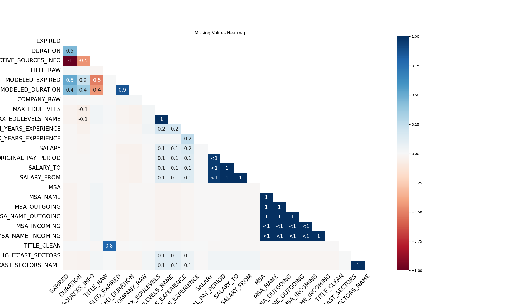

Code
import ast
import matplotlib.pyplot as plt
import plotly.express as px
import pandas as pd
import missingno as msnoTeam 4
April 22, 2025
Download a sample of the lightcast dataset from google drive. Load the CSV file into a pandas dataframe. To improve the quality of our dataset, we removed irrelevant and redundant columns based on the following reasons:
Irrelevant columns:
Columns like ID, URL, DUPLICATES, and LAST_UPDATED_TIMESTAMP do not provide meaningful insights for our analysis.
Multiple versions of NAICS/SOC codes:
The dataset contained multiple versions of industry and occupation codes (e.g., NAICS_2022_2, NAICS_2022_3, …, SOC_2021_2, SOC_2021_3).
We kept only the most recent version:
NAICS_2022_6 (for industry classification)SOC_2021_4 (for occupation classification)# Keeping only the latest NAICS_2022_6 and SOC_2021_4 columns
naics_columns = [col for col in df.columns if "NAICS" in col and col != "NAICS_2022_6"]
soc_columns = [col for col in df.columns if "SOC" in col and col != "SOC_2021_4"]
columns_to_drop = naics_columns + soc_columns
columns_to_drop = [col for col in columns_to_drop if col in df.columns]
df.drop(columns=columns_to_drop, inplace=True)
naics_columns_remaining = [col for col in df.columns if "NAICS" in col]
soc_columns_remaining = [col for col in df.columns if "SOC" in col]
print(" Remaining NAICS columns:", naics_columns_remaining)
print("Remaining SOC columns:", soc_columns_remaining)By removing these columns, we streamlined the dataset for accurate insights while maintaining all necessary classification data.

{width=“80%”, fig-align=“center”}Using cleaned datas to conduct analysis.
Here, we focus on full-time in-office non-internship roles.
We identify AI/non-AI jobs by keyword searching.
keywords = ['AI', 'Artificial Intelligence', 'Machine Learning', 'Deep Learning',
'Data Science', 'Data Analysis', 'Data Analyst', 'Data Analytics',
'LLM', 'Language Model', 'NLP', 'Natural Language Processing',
'Computer Vision']
match = lambda col: df[col].str.contains('|'.join(keywords), case=False, na=False)
df['AI_JOB'] = match('TITLE_NAME') \
| match('SKILLS_NAME') \
| match('SPECIALIZED_SKILLS_NAME') \
| match('LIGHTCAST_SECTORS_NAME')We first compare the number of AI and Non-AI jobs across all industries.
As we can see, there are almost always more AI jobs than non-AI jobs.
Now we turn out eyes to job growth and job displacement.
df_grouped = df.groupby(['POSTED', 'AI_JOB']).size().reset_index(name='Job_Count')
fig = px.line(df_grouped, x='POSTED', y='Job_Count', color='AI_JOB',
title="AI vs. Non-AI Job Posted Over Time",
labels={'POSTED': 'Month', 'Job_Count': 'Number of Job Postings'},
markers=True)
fig.write_html("figures/2_chart.html")Overall, there are more newly posted AI jobs than non-AI jobs.
df_grouped = df.groupby(['AI_JOB', 'MIN_YEARS_EXPERIENCE']).size().reset_index(name='Job_Count')
fig = px.bar(df_grouped, x='MIN_YEARS_EXPERIENCE', y='Job_Count', color='AI_JOB',
title="AI vs. Non-AI Jobs by Minimum Years of Experience",
labels={'MIN_YEARS_EXPERIENCE': 'Min Years of Experience', 'Job_Count': 'Number of Jobs'},
barmode='group')
fig.write_html("figures/3_chart.html")df_grouped = df[df['SALARY'].notna()].groupby(['AI_JOB', 'MIN_YEARS_EXPERIENCE'])['SALARY'].mean().reset_index()
fig = px.bar(df_grouped, x=['AI_JOB', 'MIN_YEARS_EXPERIENCE'], y='SALARY',
title="Average Salary: AI vs. Non-AI Jobs",
labels={'AI_JOB': 'Job Type', 'SALARY': 'Average Salary'},
color='AI_JOB')
fig.write_html("figures/4_chart.html")Further investigate into the required YoE of the posted jobs, one can see that AI jobs generally require less experience than traditional non-AI ones. In other words, AI related industry demands more junior roles and less senior roles compared to the traditional industry
As we have seen, nearly every industry now requires a significant number of AI roles. One might interest in what are the valuable skills workers should develop to land in an AI job?
import ast
df['SKILLS'] = df['SKILLS_NAME'].apply(ast.literal_eval)
ai_skills = df[df['AI_JOB']]['SKILLS'].explode().value_counts().head(20).reset_index()
ai_skills.columns = ['Skill', 'Count']
fig = px.bar(ai_skills, x='Skill', y='Count',
title="Top AI Job Skills",
labels={'Skill': 'Skill Name', 'Count': 'Frequency'},
color='Skill')
fig.write_html("figures/5_chart.html")traditional_skills = df[~df['AI_JOB']]['SKILLS'].explode().value_counts().head(20).reset_index()
traditional_skills.columns = ['Skill', 'Count']
fig = px.bar(traditional_skills, x='Skill', y='Count',
title="Top Traditional Job Skills",
labels={'Skill': 'Skill Name', 'Count': 'Frequency'},
color='Skill')
fig.write_html("figures/6_chart.html")As we can see, data sciene skills e.g. (SQL, data analysis, and programming) are favorable in AI related jobs. In the contrary, traditional jobs value candidates with strong communication and management skills.
While many traditional jobs are in the process of adopting AI-related technologies. There are many AI jobs emerging.
We note that Data Analyst is the fastest growing AI job.
job_titles = df[df['AI_JOB']]['TITLE_NAME'].value_counts().head(20).reset_index()
job_titles.columns = ['Job_Title', 'Count']
px.bar(job_titles, x='Job_Title', y='Count',
title="Top Emerging AI Job Titles",
labels={'Job_Title': 'Job Title', 'Count': 'Frequency'},
color='Job_Title')
fig.write_html("figures/7_chart.html")